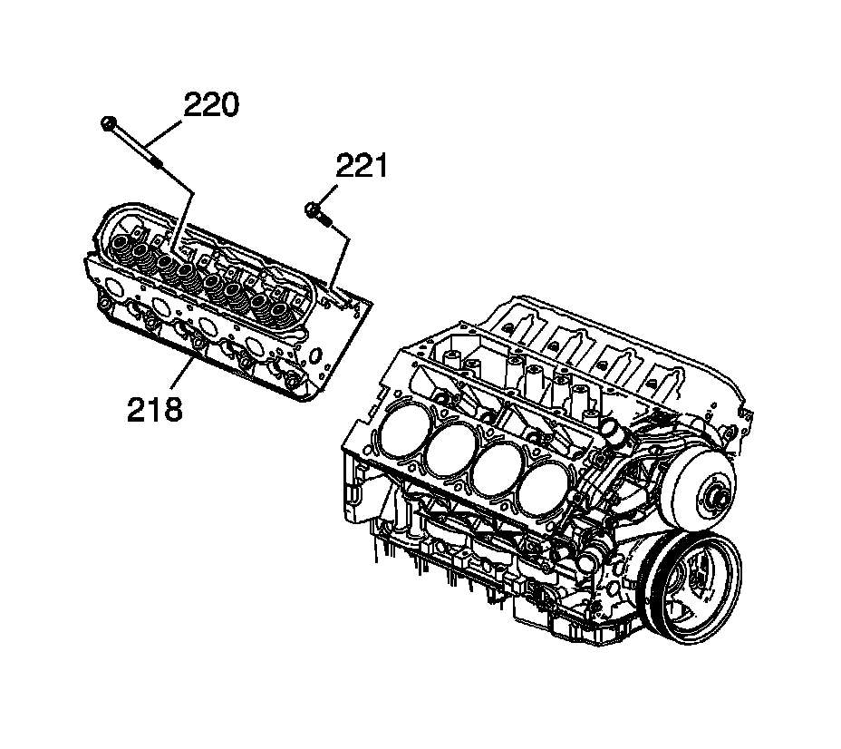
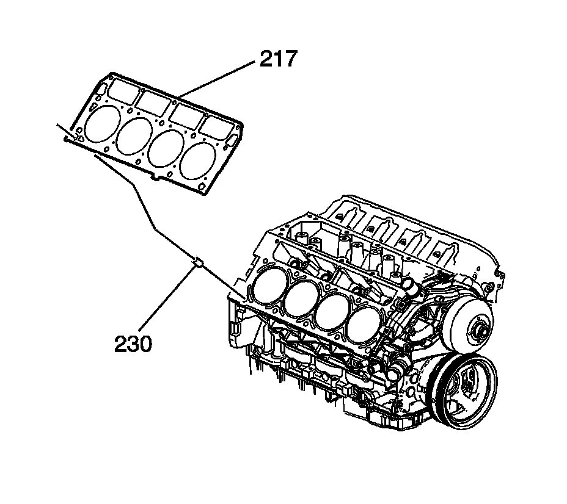

19. Cylinder Head Removal - Right Side
Cylinder Head Removal - Right Side

Important: The cylinder head bolts are of a torque-to-yield design and are NOT to be used again. Install NEW cylinder head bolts during assembly.
1. Remove the cylinder head bolts (220, 221).
Notice: After removal, place the cylinder head on 2 wood blocks in order to prevent damage to the sealing surfaces.
2. Remove the cylinder head (218).

3. Remove the gasket (217) and locating pins (230).
4. Discard the gasket and cylinder head bolts.